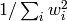

TODO
Bases: object
Creates a new Sequential Monte carlo updater, using the algorithm of [GFWC12].
| Parameters: |
|
|---|
Returns the number of times that the updater has resampled the particle approximation.
| Return type: | int |
|---|
Estimates the effective sample size (ESS) of the current distribution over model parameters.
| Return float: | The effective sample size, given by . |
|---|
Produces the particle weights for the posterior of a hypothetical experiment.
| Parameters: |
|
|---|
Given an experiment and an outcome of that experiment, updates the posterior distribution to reflect knowledge of that experiment.
After updating, resamples the posterior distribution if necessary.
| Parameters: |
|
|---|
Updates based on a batch of outcomes and experiments, rather than just one.
| Parameters: |
|
|---|
Returns an estimate of the posterior mean model, given by the expectation value over the current SMC approximation of the posterior model distribution.
| Return type: | numpy.ndarray, shape (n_modelparams,). |
|---|---|
| Returns: | An array containing the an estimate of the mean model vector. |
Returns an estimate of the covariance of the current posterior model distribution, given by the covariance of the current SMC approximation.
| Return type: | numpy.ndarray, shape (n_modelparams, n_modelparams). |
|---|---|
| Returns: | An array containing the estimated covariance matrix. |
Calculates the Bayes risk for a hypothetical experiment, assuming the quadratic loss function defined by the current model’s scale matrix (see qinfer.abstract_model.Simulatable.Q).
| Parameters: | expparams (ndarray of dtype given by the current model’s expparams_dtype property, and of shape (1,)) – The experiment at which to compute the Bayes risk. |
|---|---|
| Return float: | The Bayes risk for the current posterior distribution of the hypothetical experiment expparams. |
Returns an array containing particles inside a credible region of a given level, such that the described region has probability mass no less than the desired level.
Particles in the returned region are selected by including the highest- weight particles first until the desired credibility level is reached.
| Return type: | numpy.ndarray, shape (n_credible, n_modelparams), where n_credible is the number of particles in the credible region |
|---|---|
| Returns: | An array of particles inside the estimated credible region. |
Estimates a credible region over models by taking the convex hull of a credible subset of particles.
| Parameters: | level (float) – The desired crediblity level (see SMCUpdater.est_credible_region()). |
|---|
Estimates a credible region over models by finding the minimum volume enclosing ellipse (MVEE) of a credible subset of particles.
| Parameters: |
|
|---|